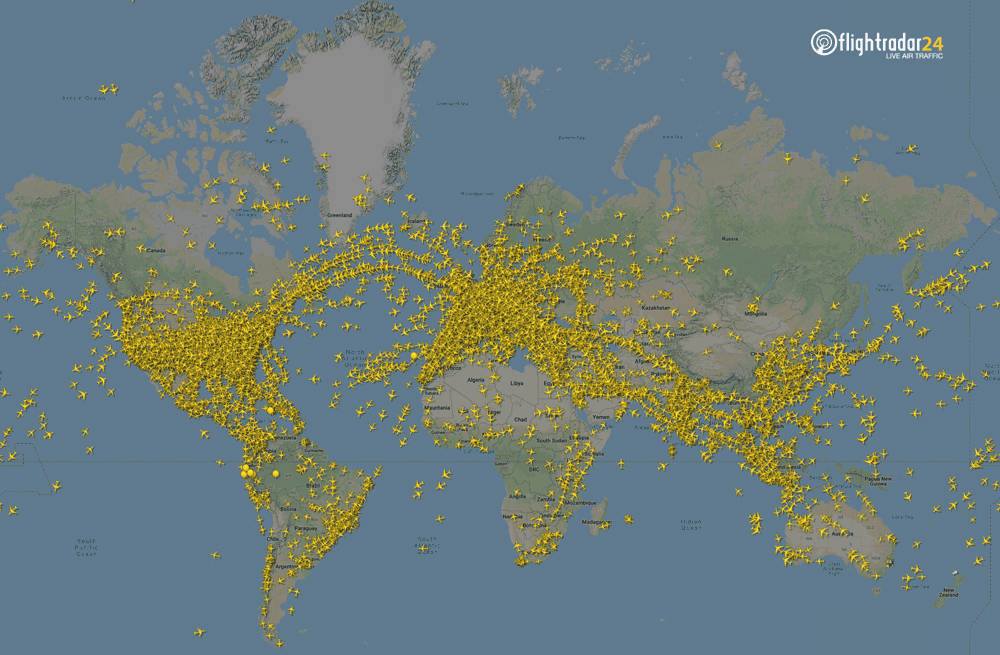

Transportul in Prezent
Avioane
Avioanele au avut un impact semnificativ în revoluționarea transportului în era modernă. Ele au adus posibilitatea călătoriilor rapide și la distanțe mari, transformând modul în care ne deplasăm și interacționăm cu lumea. Avioanele comerciale facilitează călătoriile internaționale și intercontinentale, permițând oamenilor să ajungă la destinațiile lor într-un timp mult mai scurt decât ar fi posibil cu alte mijloace de transport. De asemenea, avioanele sunt folosite și pentru transportul de mărfuri, jucând un rol esențial în logistica globală și în distribuția rapidă a bunurilor între diferite regiuni ale lumii.

Cu toate aceste beneficii, avioanele se confruntă și cu provocări, cum ar fi impactul asupra mediului înconjurător și costurile ridicate asociate întreținerii și operării lor. În ciuda acestor provocări, avioanele continuă să fie un element esențial al sistemului de transport global, oferind o mobilitate fără precedent și facilitând conexiunile între oameni și comunități din întreaga lume.